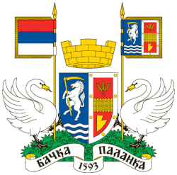
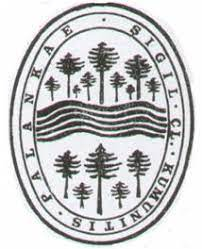
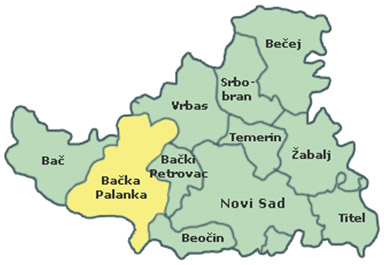
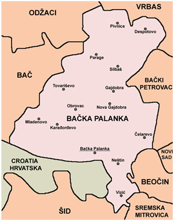

Општина Бачка Паланка је јединица локалне самоуправе у Републици Србији. Налази се у АП Војводини и припада Јужнобачком управном округу. Територија општине заузима површину од 579 km² што је сврстава у групу већих општина у Војводини. Центар општине је град Бачка Паланка.
Бачкопаланачка општина захвата пространу површину југозападне Бачке са дванаест насеља: Бачка Паланка, Челарево, Гајдобра, Нова Гајдобра, Пивнице, Деспотово, Силбаш, Параге, Обровац, Товаришево, Младеново и Карађорђево. Поред тога, њој припадају и два насељена места у Срему, Нештин и Визић.
Поред леве, бачке обале Дунава, на подручју општине, простире се 0,5-2 km широка ниска ритска површина, угрожена високим водама Дунава. Због тога на самој обали нема изграђених насеља. Најближа Дунаву је Бачка Паланка. Периферни јужни делови града удаљени су од реке 500 m.
Једино мало сремско насеље Нештин лежи непосредно уз десну дунавску обалу. Из наведених разлога, на подручју општине није изграђено ни једно речно пристаниште, тако да Дунав, иако велика међународна пловна река, у саобраћајном погледу за општину нема већег значаја. Општинском територијом трасирана су и два пловна канала хидросистема Дунав–Тиса–Дунав.

Бачка Паланка се налази наобали реке Дунав на граници са Републиком Хрватском. На 1297. километру реке Дунав налази се мост „25 мај“ који спаја Бачку Паланку и град Илок у Републици Хрватској (ЕУ).
Бачка Паланка се налази 40 км западно од Новог Сада, 122 км северозападно одБеограда, 107 км јужно од Суботице, 323км јужно од Будимпеште и 564 км југоисточноод Беча.
Бачка Паланка на територији своје општине има периферни положај. Она је, сагледавајући општинска насеља у Бачкој, најјужније и Дунаву најближе насеље. Источно од општинског седишта, поред новосадског пута лежи Челарево удаљено 11 km. У правцу северозапада, на сомборском путу су Обровац, удаљен од Бачке Паланке 9 km и Товаришево, удаљено 14 km.
Нешто западније, на локалном путу су Карађорђево, до ког има 10 km и Младеново, удаљено од општинског средишта 14 km. У правцу севера, на путу за Врбас су следећа насеља: Нова Гајдобра на 10 km, Гајдобра на 14 km, Силбаш на 20 km и Деспотово удаљено од општинског центра 29 km.
Од Деспотова пут води до Пивница, најудаљенијег насеља од општинског средишта до кога има 34 km, док од Силбаша пут води до Парага удаљених 25 km.
Преко Дунава и дела Вуковарске општине, што је својеврсни куриозитет, долази се Подунавским путем до Нештина, удаљеног од Бачке Паланке 9 km, а на локалном путу је и последње општинско насеље Визић, удаљено од Подунавског пута 6, а од центра општине 13 km.
У општини, према последњем попису,живи и ради 55.528 становника. Најбројнији су Срби, Словаци, Мађари и Роми. У општини је поред српског језика у службеној употребии словачки језик. Становништво доминантно припада традиционалним верским заједницама у Србији: Српској православној цркви,Словачкој евангеличкој цркви аугзбуршке вероисповести у Србији и Римокатоличкој цркви.
| Демографија | |
|---|---|
| Година | Становника |
| 1948. | 12830 |
| 1953. | 13625 |
| 1961. | 16475 |
| 1971. | 21104 |
| 1981. | 25001 |
| 1991. | 26780 |
| 2002. | 29449 |
| 2011. | 28239 |
| 2022. | 25476 |
У Општини Бачка Паланка сваки човек без обзира на етничку, верску или какву другу припадност, како у прошлости тако и данас, може да пронађе своје место за живот и рад уз међусобно разумевање и поштовање, а у заједници са другим грађанима наше општине.